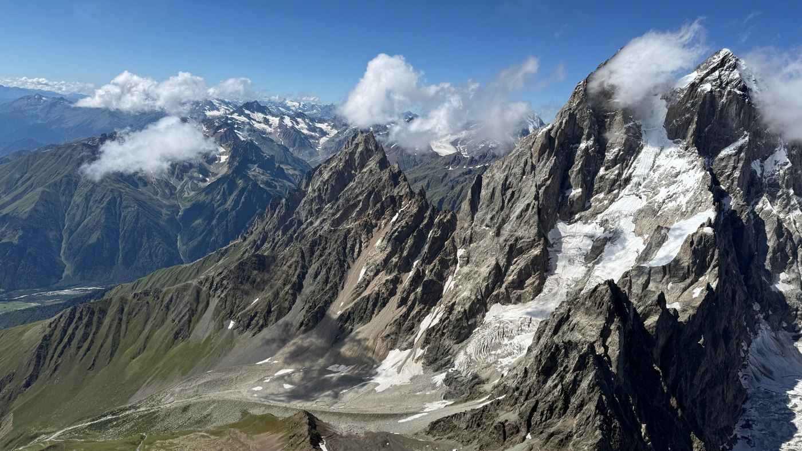

Analytisch · Überblick
Erst den Engpass verstehen, dann bauen
Beim Streckenfliegen in den Alpen gewinnst du keine Höhe mit der Brechstange. Du liest das Gelände, verstehst den Wind und nutzt den Aufwind gezielt. Bei Software und Daten ist es dasselbe: Erst die echte Ursache im System isolieren – dann eine Lösung bauen, die dauerhaft trägt.